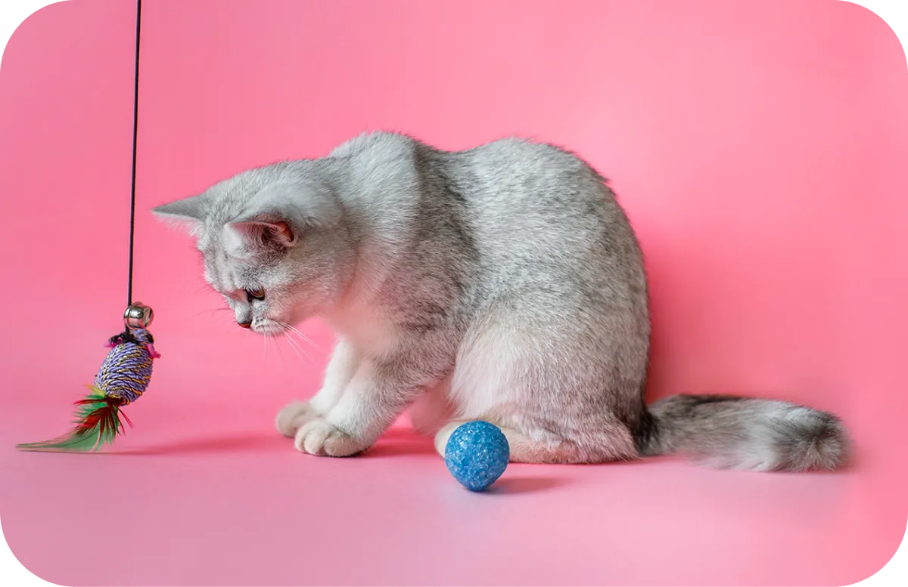

Pet health | September 24, 2022
Meal Options for Your Dog
Proper nutrition is especially important for purebred dogs. Some dogs are in rather poor health, and you should maintain it with healthy food and vitamins.

Pet care| September 12, 2022
How to Look After Rabbits
Indoor rabbits are so soft and fluffy that every second family thinks about buying a rabbit! But these animals require special care, including a spacious cage.

Pet health | September 03, 2022
Signs Your Cat is Stressed
Everyone knows that cats can be very wayward animals. But sometimes they show their bad temper for special reasons, namely because they are stressed.